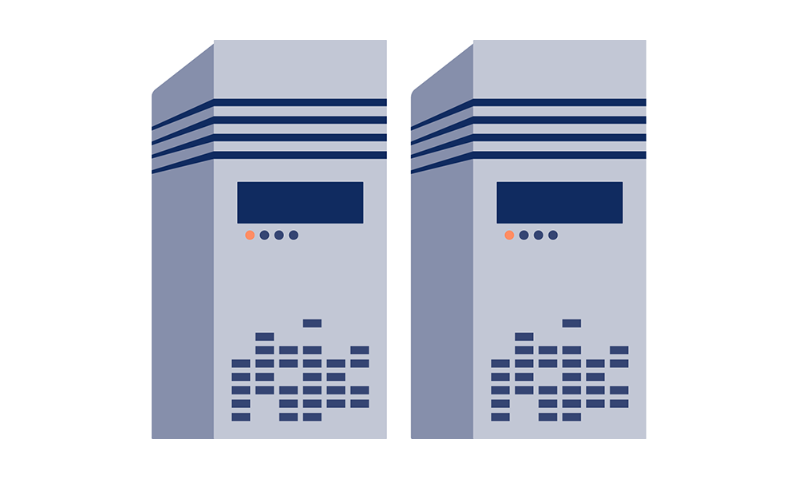
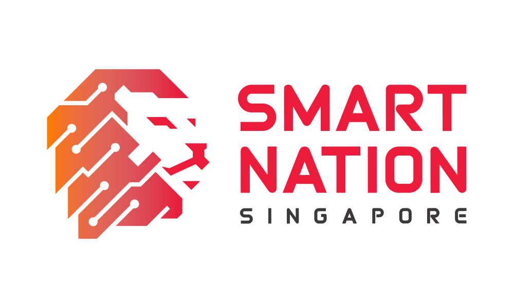

Session 3
Case Study: Singapore’s Smart Nation, Open Government Products, and Singapore Government Tech Stack
![]()

Smart Nation journey




Trust


Growth


Community


ScamShield helps users detect, check, and report suspicious messages, calls, and links.
Reported scams are verified by authorities, helping them track and respond to new scam variants.
Paper voucher campaigns were slow to launch and difficult for residents to claim and use.
Merchants experienced long delays in receiving payments.
Existing digital alternatives were available but scattered across multiple complicated apps.
RedeemSG provides a unified platform for government agencies and non-profits to create, distribute, and monitor vouchers nationwide.
Citizens redeem vouchers and merchants accept them through the same system.
Overview
The Singapore Government Tech Stack (SGTS) modernises development practices across the whole government.
The goal is to support the creation of secure, responsive systems that keep up with evolving citizen and business needs.

Architecture - service layer

The Problem
Singapore-registered companies must regularly submit employee salary, workforce, and CPF contribution data to various government agencies (IRAS, MOM, CPFB).
All required data already exists within companies’ payroll or HR systems.
The challenge is to integrate government submissions with these systems to streamline processes, reduce manual work, and save employers time and resources.